|
|
| Gulasch, P�rk�lt
und Tokanjer |
| |
Im
deutschsprachigen Raum wird viel �ber Gulasch geschrieben,
magisch viel. H�chstwahrscheinlich aus dem einfachen Grund,
dass diese oder sehr �hnliche Gerichte auch in der deutschen
K�che am h�ufigsten auf den Tisch gezaubert werden. In
Kochb�chern voneinander abgekupfert, von vermeintlich gro�en
K�chInnen und vornehmen Gr�finnen als KochliteratInnen grob
fahrl�ssig behaupteten Unwahrheiten ist die Gulaschliteratur
belastet, zudem wird dieses Thema mit Hausrezepten
verw�ssert... Es wird vieles als "original ungarisch" oder
"echt ungarisch" beschrieben, wie Gulasch von der einen oder
anderen Oma irgendwann mal so vorgef�hrt war. Im Internet
kursieren unz�hlige Videos dar�ber, wie Gulasch richtig
ungarisch sein soll, aber die meisten vom H�rensagen oder von
wo auch immer abgekupferten Rezepte sind falsch.
So sind wir der Sache nachgegangen und wir haben hier ziemlich
viel �ber Gulasch, Gulaschsuppe und gulaschverwandte Gerichte,
speziell aus der ungarischen K�che nachgeforscht und
zusammengetragen - mal sehen, was echt original ungarisch sein
soll.
|
|
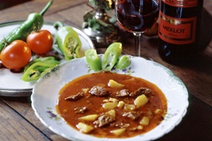 |
Gulasch ist in Ungarn immer eine
Suppe, wie am Bild links, im deutschsprachigen
Raum jedoch ein Ragout oder Eintopf.
Gulasch hie� in Ungarn urspr�nglich "guly�sos leves", d.h.
Suppe nach Art des Rinderhirten. Der ungarische Rinderhirt kochte
seine Gulaschsuppe
immer aus Lamm-, Gefl�gel- oder Schweinefleisch, ja sogar
aus Fisch, aber nicht aus Rindsfleisch.
Das
geh�tete Rind musste er komplett abliefern, tot oder lebendig, so
blieb ihm nichts �brig. Die erste
ungarische Niederschrift von Kochrezepten aus dem 13.
Jahrhundert, die in Kesseln
von
dem Rinderhirt in der Pu�ta zubereitet wurden,
enth�lt fast ausschlie�lich Fischgerichte. Rindsfleisch war
danach noch lange Zeit Tabu in Ungarn. |
In der deutschsprachigen Literatur
erschien das Rezept f�r Rindergulasch (mit Kartoffeln) 100 Jahre fr�her, als in Ungarn -
zuerst in einem j�dischen Restaurant in Prag, sp�ter in Wien! Kartoffel
wurde in der k. u. k. Monarchie gerade erst mithilfe von
Steuerverg�nstigung f�r den Anbau eingeb�rgert und passte
prima zur Rindfleischsuppe. Die Steuerverg�nstigung gew�hrte
Joseph II, der ungekr�nte Sohn der Maria Theresia. Soviel hier
zu den lfd. neu erkorenen Fabelger�chten, wie Rindergulasch
vom Rinderhirt "original" oder "echt ungarisch" sein soll.
|
Sogar der in Ungarn heute als Papst aller Gourmetk�che
angepriesene Karl Gundel junior, der als Inhaber vieler und
Lieferant noch mehr Budapester Restaurants eher als
Gesch�ftsmann als Koch zu betrachten ist, verbreitete falsche
Ger�chte und Rezepte, die zwar aus der ungarischen K�che
stammen, aber von ihm zu Ehren seiner betuchten G�ste
umkreiert wurden. Er erfand sogar Rezepte, die zugunsten
seines Gesch�ftspartners und Paprikam�hlenbesitzers Kot�nyi
aus Szegedin sp�testens Anfang des 20. Jahrhunderts mit viel
Paprikapulver bereichert eine v�llig neue Geschmacksrichtung
f�r die ungarische K�che � la Gundel auserkoren wurden. Mit Gundels Wirken gleichzeitig verteilte
der Szegediner Paprikam�hlenbesitzer Kot�nyi viele Jahre lang seine kostenlosen Werbezettel mit
Kochrezepten, in denen er Pfeffer durch
Paprikapulver ersetzte. Gegen brutaler Sch�rfe bzw. f�r
Magenfreundlichkeit mischte sein Gesch�ftspartner, der vermeintliche Gourmetkoch
Gundel Sauerrahm in die Gerichte und so entstanden die Paprikaschgerichte in Ungarn, die in den ungarischen Medien
franz�sische Cuisine vorgaukeln sollten. In Frankreich
beherrscht ein Grundsatz die K�che seit eh und je:
"die Sch�rfe verdirbt den Geschmack" und wenn man das � la
Gundel mit Sauerrahm kaschiert, dann wei� der Gast nicht, was
ihm der Koch unterjubelt. Von Gundels Kreationen ist
Vieles in die
Landesk�che �bergegangen, umso mehr jedoch nicht, trotz seiner
von Gewerbetreibenden hochgepriesenen Literatur. Aus den
genannten Gr�nden denken wir, es sei notwendig, dem
ungarischen Gulaschgericht etwas gr�ndlicher nachzugehen.
|
Das deutsche Wort Gulasch wurde aus dem ungarischen "Guly�s"
(sprich: Gujasch) �bernommen, das Pusztahirt
bedeutet. Gemeint ist aber das alltägliche Essen des Viehh�ters, das er
unter freiem Himmel in seinem Suppenkessel zubereitet. Deswegen versteht man in
Ungarn als Gulasch immer eine
Suppe, die man in Restaurants beim Ober als Guly�s oder Guly�sleves (Gulaschsuppe) bestellt.
Da der Rinderhirt
alle geh�teten Rinder und bei Tierverlust,
auch
die Kadaver den jeweiligen Eigent�mern komplett abliefern
musste,
genauso wie bei uns beim Almabtrieb, blieb ihm kein Rindsfleisch �brig. Er kochte kein
Rindsfleisch und war auf Schweine-, Lamm- und H�hnerfleisch
oder Fisch angewiesen.
Besser erging es den Sch�fern. Auch sie mussten am Ende der
Mastperiode peinlich genau mit dem Vieh abrechnen, durften aber
die verlorenen St�cke mit dem Schafsfell nachweisen. So ist
immer das Lammfleisch das Hauptgericht in der Puszta gewesen.
Das
deutsche Gulasch ist
ein Tellergericht und wird in Ungarn
P�rk�lt
genannt. Das stimmt nicht unbedingt! Das ist n�mlich die
Nomenklatur nach dem als Gourmetkoch bekannten Karl Gundel
junior,
der zwar hoch angesehen ist in seiner Branche, daf�r aber die
Farbe mit der Harfe in seinem Gartenlokal mit Zigeunermusik laufend verwechselte und so seine
Probleme mit der ungarischen Sprache hatte. Die Beharrung der
Ungarn, dass Gulasch immer eine Suppe und P�rk�lt ein
Tellergericht ist, stimmt so nicht, auch dann nicht, wenn ungarische Glanzprospekte westlichen Touristen
dieses Wortspiel seit Jahrzehnten als Besch�ftigungstherapie
vorgaukeln.
|
|
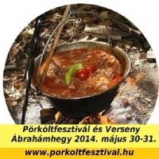 |
Ist P�rk�lt unser Tellergericht Gulasch? In der Tat wird der P�rk�lt in
Ungarn seit eh und je wie eine Suppe
in Kesseln gekocht - Bilder links und rechts. Somit ist auch der P�rk�lt eine
Suppe mit mehr oder weniger Fl�ssigkeit, woraus man
auch ein
Tellergericht servieren kann. Was den P�rk�lt
ausmacht, dar�ber lesen Sie bitte hier unten �ber die
P�rk�lttechnologie
bzw. Glasieren und Krustieren. Der
Name von Pörkölt entstammt aus dem ungarischen Wort
"pörk" und bedeutet Anger�stetes. P�rk ist die im Fett angeröstete und
dabei wei�lich gewordene Fleischkruste. Das
ungarische Wort Pörk entstammt jedoch aus dem englischen
Perk, wird identisch ausgesprochen - ein Hinweis
auf den
wahrscheinlichen Ursprung des Wortes Pörkölt, das - wie
die Gulaschsuppe
auch - wahrscheinlich aus dem Irish Stew abstammt - soweit man Gulasch in den Annalen
bis ins Könighaus des Hl. Stefans folgen kann. |
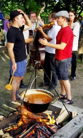 |
In den �ltesten ungarischen Kochrezepten aus
vorkolumbianischer Zeiten kam das
Paprikapulver �berhaupt nicht vor! Gulaschsuppe ohne Paprika
hie� urspr�nglich "guly�sos leves", so steht es in
den �ltesten Rezeptheften, d.h. Suppe nach Art des
Viehh�ters. Daneben kannte man auch Tok�ny (dt. Tokanjer).
Der Tok�ny �hnelt dem deutschen Gulasch aus geschnetzeltem
Fleisch, indem dieser keine
Suppe ist, enth�lt aber auch heute kein Paprikapulver. Die Sch�rfe kam
fr�her nur vom Pfeffer
in den Teller oder vom ungarischen Bohnenkraut, das sich vom
deutschen Bohnenkraut nur in seiner Geschmacksintensit�t unterscheidet.
Hierzulande schw�chelt die pfeffer�hnliche Sch�rfe im Bohnenkraut.
Es ist eben eine andere Bohnenkraut-Unterart, was in den
�stlichen Landesteilen Ungarns in der Natur vorkommt, aber auch
kultiviert wird. Dort wird
Bohnenkraut auf Ungarisch Borsikafű
bezeichnet und das Wortteil "Bors" bedeutet Pfeffer auf
Ungarisch. Borsikafű wird im
�stlichen Ungarn Csombor
genannt und gilt als Pfefferersatz.
Borsikafű bzw. Csombor, das
ungarische Bohnenkraut ist somit ein
magenfreundliches Pfeffergew�chs.
Das
Paprikapulver war lange ein kostbares W�rzmittel und kam sp�ter in
die ungarische K�che, als in den deutschsprachigen L�ndern.
Erst Ende des 19. Jahrhunderts begann J�nos Kot�nyi, ein
Paprikam�hlenbesitzer aus Szeged, ungarische Kochrezepte zu
publizieren, indem er in die Rezepte soviel Paprikapulver
mischte, wie nur m�glich ist. Die einen sagen, er bereicherte
die ungarische K�che mit einer neuen Geschmacksrichtung, die
anderen haben ebenso recht, wenn sie sagen, eine traditionelle
K�che wurde mit Paprika verf�lscht, denn nicht jeder mag das
Paprikapulver. Vor allem Leute mit �bers�uertem Magen lehnen
Paprika ab - und das ist von Natur aus ein gro�er Teil der
Menschheit. Nicht nur wegen Magens�ure, auch von Natur aus
m�gen nicht alle den Paprikageschmack. Aus diesem Grund
setzten sich die Paprikagerichte keinesfalls so sehr
durch, wie die Glanzprospekte aus der ungarischen
Touristikzentrale den Ausl�ndern es seit Jahrzehnten
vorgaukeln. In vielen Landstrichen kennen die Ungarn
die Paprikagerichte bis heute nicht. Der paprikalose Tokanjer ist
vielerorts weiterhin ein Renner in der traditionellen
ungarischen K�che.
|
Was ist P�rk�lt ? - Den Unterschied macht lediglich die
Anwendung der P�rk�lttechnologie in Ungarn
Das Wort
P�rk�lt (dt. Anger�stetes) steht f�r die Kochtechnologie.
Zwiebel (gleiche Menge, wie Fleisch oder Pilz) soll
zerkleinert bei Niedrigtemperatur
im Schmalz schmoren, dabei vom Fett vollst�ndig bedeckt
sein, damit ihre zuckerhaltigen Bestandteile in den Kochsud
�bergehen. Zuletzt wird Pfeffer, neuerdings in den meisten
Landesteilen auch Paprikapulver untermischt und das Fleisch
darin
unter st�ndigem R�hren solange
angebraten, bis es von allen Seiten anger�stet (ung.
p�rk�lt) wird.
Das alles nennt der ungarische Fachmann P�rk�lttechnologie.
Auf Deutsch spricht man von Glasieren und Krustieren.
- Der Fachmann sagt, die Zwiebeln werden auf das Fett
reduziert und das Fleisch oder Pilz dabei krustiert. Das ist
wichtig, damit der in den Zwiebeln vorhandene pflanzliche
Zucker karamellisiert und dabei das Fleisch oder der Pilz
ordentlich R�staromen bekommt.
|
Wie auch immer, Glasieren ist nicht ganz das, was die Ungarn
als P�rk�lttechnologie bezeichnen. Es ist der Einfluss
der deutschen K�che, wenn man das Paprikapulver und evtl.
weitere Gew�rze, wie K�mmel bereits auf
die Zwiebeln streut und schnell danach das Wasser (zuerst
wenig) und das Fleisch (oder Pilz) nur noch ins Kochwasser
gibt. In diesem Fall k�nnen sich unz�hlige Aromen nicht
entfalten und auch der karamellisierte Fleischgeschmack
(P�rk�ltgeschmack) entsteht erst gar nicht. So kocht man
deutsches Gulasch, aber kein ungarisches P�rk�lt!
Bei der Zubereitung von P�rk�lt einen Teil des unn�tig
zugegebenen Kochwassers
durch Bier oder Wein zu ersetzen ist zwar abartig, aber
keinesfalls neumodisch. Die Methode geh�rt zu den
Machenschaften der kulinarischen K�che, die aus der uralten Wildk�che des Hochadels
abgekupfert wurde und bereits seit Jahrhunderten, sp�testens seit
der Gro�en Franz�sischen Revolution in der Volksk�che der
Franzosen allgegenw�rtig ist, wo Tafelwein so auf dem Tisch
steht, wie anderswo das Tafelwasser - und das soll neulich in New
York von einem Exilungar erfunden worden sein - siehe mehr dazu unter
kulinarisches Restaurant Gundel im Stadtpark von Budapest...
Rotwein statt Wasser in der Kochfl�ssigkeit ist bei rotem
Fleisch, vor allem beim Schwarzwild (Wildschwein), Reh- und
Rotwild (bzw. Hirsch) angebracht. Wei�wein ist zu empfehlen
bei wei�em Gefl�gelfleisch (Huhn, Auerhuhn, Rebhuhn, Fasan, Schnepfe
u.a.), Fisch und Pilz. Das gilt heute im kulinarischen
Restaurant Gundel
nicht anders, als in Frankreich zuhause bei Mama oder beim
Picknick, wo der Landwein sp�testens seit der Gro�en
Revolution zu jedem Tischgericht
grunds�tzlich dazugeh�rt - vom Hochadel abgekupfert bzw.
enteignet.
|
Ob
P�rk�lt bzw. Gulasch tatsächlich ungarischen
Ursprung aus den
asiatischen Steppen hat, darüber gibt es kein schriftliches
Dokument und kein Ungar meint es ernst, wenn er damit angibt. Das
erste ungarische Rezeptbüchlein aus dem 12. Jahrhundert
enthält rd. 70
Fischgerichte in den Pusztagebieten, die meist in Kesseln zubereitet
werden. Bei einigen Suppen erwähnt man, dass dies die
Art und Weise ist, wie der Pusztahirt
Gulyás, der
damals wochen- oder monatelang ohne feste Behausung lebte,
das Gericht unter freiem Himmel zubereitete.
Es
ist
belegt,
wie Irish Stew, das
ursprüngliche Gulaschsuppenrezept aus Irland über Deutschland in
das
ungarische
Könighaus kam.
Ein irischer Mönch, der zeitweilig
in einem Kloster im Münchener Raum lebte und im
Gefolge der Heiligen Gisela auf Anordnung und in Vertretung des Hl.
Wolfgangs (Erzieher der Gisela) weiter nach Ungarn zog,
brachte
dieses
Rezept direkt in die
königliche Residenz des Hl. Stefans nach Esztergom
mit und nicht in die Pußta. Dieser
Mönch begleitete Gisela nach Ungarn, als sie im Jahre 995 im
Alter von etwa 10 Jahren den damals etwa 25jährigen Stefan
heiratete. Für Stefan war sie nicht die erste Frau, aber
wen interessieren seine andere Frauen heute in Ungarn?
Irgendwie passt diese Angelegenheit nicht in die christliche Religion,
die er in Ungarn seinem Volk aufzwang. Dieser
Mönch war lange
Zeit Giselas Patron
und
ging bei
Stefan
ein und aus. In Anlehnung an Gisela, beteiligte er
sich maßgeblich an der Christianisierung
der Ungarn.
|
|
|
| 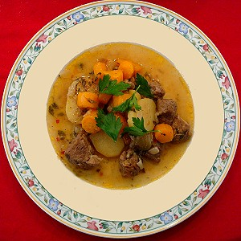 |
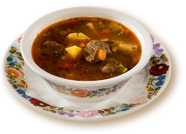 |
|
Irish
Stew |
|
Beide
Suppen werden aus Lammfleisch, Zwiebeln, Kartoffeln, Karotten,
Petersilienwurzel und -grün gekocht, einen geringen Unterschied gibt
es in der Gewürzmischung.
Das Grundrezept der beiden Suppen unterscheidet sich rd. Tausend Jahre
später lediglich in der Anwendung von Paprikapulver, das in Ungarn erst
im 16. Jahrhundert erschien und erst seit rd. Hundert Jahren �ppig in die Gulaschsuppe gemischt wird.
|
Paprika
ist eine ursprünglich südamerikanische
Pflanze, ebenso Kartoffel und beide geh�ren nicht zwingend in die Gulaschsuppe. Kartoffel passt gut zum Rindsgulasch, das aber in Ungarn relativ
neu ist. Csipetke (Zupfnudeln)
und Nokedli (Kn�pfli bzw. Sp�tzle) brachten die Donauschwaben mit sich
und Kartoffel kam noch sp�ter durch die steuerliche
F�rderung des ungekr�nten Maria-Theresia-Sohnes Joseph nach Ungarn - wurde doch erst
ab Ende des 18. Jahrhunderts in Ungarn kultiviert.
Das Bild rechts zeigt Kesselgulasch und
einige Zutaten. Den
in Ungarn landestypischen Geschmack erreicht man, wenn
das Verh�ltnis etwa 3-4 M�hren zu 1-2
Wurzelpetersilien. |
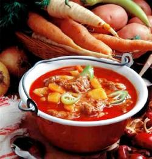 |
|
Wurzelpetersilie
- Bild rechts - ist eine wichtige geschmackgebende
Komponente der ungarischen Gulaschsuppe! Aus vielen
deutschen Kochb�chern denkt man auf Petersiliengr�n in
der Gulachsuppe, weil voneinander laufend falsch abgekupfert
wurde und hierzulande die Petersilienwurzel bereits in
Vergessenheit geriet durch das auf Gr�n hochgez�chteten Gew�chshauspflanzen.
Beim Kauf von Wurzelpetersilie sollte man neben der Gr��e
auch darauf achten, dass man sie nicht mit dem gleich
aussehenden Pastinak verwechselt.
Botanisch betrachtet handelt es sich um die gleiche Pflanze,
im
Pastinak fehlen jedoch die meisten Geschmackstr�ger, sein Duft ist fade
und somit ungeeignet f�r die Gulaschgerichte. |
|
|
Rindfleisch in
der Gulaschsuppe? |
|
|
|
...ist relativ neu! - Gulaschsuppe
war früher grundsätzlich
aus Lammfleisch gekocht,
genauso wie Irish Stew in Irland. Bis zum Anfang des 19. Jahrhunderts
kaum bekannt, begann die Gulaschsuppe seinen Siegeszug in die
ungarische
Küche, nachdem einige Literaten, meist zugereiste Neub�rger sie zu
ihrem
Leibgericht
erkoren hatten. In letzter Zeit wird der Schriftsteller Gyula Krudy
vielfach zitiert, weil er Anfang
des 20. Jahrhunderts die
Gulaschsuppe speziell aus Rindfleisch als Erster auf Ungarisch beschrieben haben
soll. Aber
damals kannte man das Rindsgulasch schon
mindestens 100 Jahre lang in Wien
und Prag.
|
|
Über
Rindfleisch in Ungarn: nicht in Vergessenheit geraten
sollte, dass Rindfleisch in Ungarn lange nach Krudys
Zeiten noch immer nur mitgekocht, aber nicht
serviert, sondern entsorgt wurde. Noch in den 1960er Jahren
aß man das Rindfleisch
gewöhnlich nicht einmal im damals noch koscheren Restaurant Kadar
(Restaurant) am Klauzal tér Platz im j�dischen Zentrum von Budapest
und wenn, dann nur Bruchstücke davon als Beilage.
Bevor das
gekochte Rindfleisch dort entsorgt wurde, bekamen Insider hinter
verschlossenen T�ren in den nachmitt�glichen Ruhestunden (15
bis 18 Uhr) faustgro�e Fleischst�cke aus der Suppe mit Brot und frischem Meerrettich
serviert - f�r 3 Forint die Portion damals und man trank noch ein kleines
Bier f�r 2 Forint dazu, damit auch der Wirt zufrieden bleibt
und man am Arbeitsplatz nicht allzu lustig auff�llt. In Ungarn ist das ein
genauso beliebter Genuss mit Bier, wie Brotzeit in Bayern - es
geht leider aus der Mode, weil die Restaurants wenig
daran verdienen. In Ungarn bevorzugt man
hierf�r Rinderwade. |
 |
Wenn man in Ungarn in fr�heren
Jahrhunderten Rindfleisch a�, dann in den
Adelsh�usern und dort wurde fast immer nur der Ochse verzehrt - in
einem St�ck gegrillt - bei gr��eren Feierlichkeiten.
|
|
Karl Gundel
Senior gilt seit Ende des 19. Jahrhunderts als Pionier und
berühmtester Koch von Ungarn. Sein nach
ihm
benanntes Restaurant "Gundel" im Stadtpark von Budapest ist seit Ende
des 20. Jahrhunderts eine Pilgerstätte kulinarischer
Köche aus der ganzen Welt.
Er war ein
Revolutionär in der Küche, indem er
vieles aus der
französischen Küche des Hochadels (erlernt in
Luxushotels in Böhmen und der
Schweiz) in seine Rezepturen
übernahm. Sein
Restaurant wurde 1949 verstaatlicht. |
Im Gegensatz zu manchen anderen
Angaben - so auch gegenüber Wikipedia, wo jeder seine Meinung
schreiben
und Tatsachen laufend verfälschen kann - ist es bekannt, dass Karl
Gundel Junior im Frühjahr 1957 in einem Grazer Krankenhaus
starb und
nicht schon im November 1956 (damals verließ er Ungarn), wie
in Wikipedia laufend korrigiert wird.
Nach der Niederlage des Aufstandes und erneutem Einmarsch
der Sowjettruppen verließ
er am 28. November 1956 Ungarn.
Mehrere Personen von seinen Erben starben unter
merkwürdigen Umständen schon in der
Sowjetära, so auch der in Ungarn
berühmte Schauspieler Zoltán Latinovics im Jahre 1976, der sein
Direkterbe werden
sollte. Bei seinem misteri�sen Eisenbahnunfall an der Bahnstation in Balatonszemes
am
Plattensee war die
gesamte Führung des
Geheimdienstes vor Ort,
obwohl der Dienstort dieses Personenkreises rd.
150 km
entfernt in Budapest war.
|
Mit einem in bestimmten Medien
hochgelobten Buch �ber die kulinarische K�che, das angeblich
von ihm erfunden sein soll, errang der aus Ungarn
zugereiste New Yorker Georg Lang einen vermeintlichen Ruhm und damit
seine vorget�uschte
Berechtigung, das ber�hmteste Restaurant von Ungarn zu erwerben.
Dazu musste er nach den in der sog. politische Wendezeit der
1990er Jahre geltenden Gesetzesvorschriften seinen Wohnsitz in Ungarn
gehabt haben, was er zum Schein auch hatte, indem er seinen
Wohnsitz kurzfristig in Budapest anmeldete, dabei wohnte seine
Familie weiterhin in New York und nie in Ungarn. Nicht zuf�llig wechselte das
Restaurant Gundel danach von einer Hand in die n�chste, bis es
zuletzt bei der Hilton Hotelkette landete, die in Ungarn von der Danubius Hotelkette verwaltet wird. Trotz alledem gilt
Georg Lang in
bestimmten Kreisen als Erfinder der kulinarischen K�che, auch
wenn diese vor ihm in Frankreich schon mindestens seit zwei Jahrhunderten
allgegenw�rtig war in der Volksk�che.
|
|
|
Seit Georg Lang das Restaurant im Stadtpark von Budapest
erwarb,
pilgern die Jungk�che in Scharen aus weit entfernten L�ndern zum
Restaurant Gundel, wo ihnen
angeblich das Beste aus der kulinarischen K�che vorgegaukelt
wird. In gastronomischen Kreisen z�hlt es heute weltweit und
es wird oft gefragt, ob man
schon bei Gundel war? Hauptsache
ist ein Ja auf diese Frage, dabei ist es unwichtig, wie lange
und ob man je bei Gundel besch�ftigt gewesen sei. - Gundel
Palatschinken, eine urspr�nglich kroatische Spezialit�t, ist �ber die Landesgrenzen hinaus ber�hmt,
daneben bietet der eigene Konditoreibetrieb weitere
kulinarische K�stlichkeiten an, wie das Bild zeigt. |
|
Karl
Gundel
Junior veröffentlichte viele
Küchenrezepte, die in Ungarn
oft nachgeahmt und so von ihm zu
ungarischen Nationalspeisen erkoren wurden. Das wichtigste
davon für Küchengourmets ist die
Unterscheidung der vier
wichtigsten Gulaschgerichte, wie von ihm beschrieben und
in Ungarn heute peinlich genau wie
eine Küchenbibel beachtet wird: |
|
|
Ungarisch: |
- A gulyás
bőséges lével, hagymával és
paprikával készített leveses
étel, kockára
vágott burgonyával és
csipetkével.
- A pörkölt
ugyancsak paprikával készült, itt
azonban az apróra vágott hagyma
nagyobb szerepet játszik, leve sűrű,
mártásszerű, maga az étel raguhoz
hasonlítható.
- A paprikás
lényegében abban
különbözik a pörkölttől,
hogy csak fehér húsú
állatokból, tejföllel, vagy
tejföllel elkevert tejszínnel
készül,
némileg kevesebb hagymával és
paprikával. Úgy is mondhatnánk, hogy
ez a
pörköltnek finomabb, szalonképesebb
változata.
- A tokány
az
előző kettőhöz hasonló, de ennél a
húst nem kockára, hanem többnyire
kisujjnyi csíkokra vágjuk.
Néhány tokánynál a paprika
csak aláfestő
szerepet játszik, esetleg el is marad, viszont
előtérbe kerülnek egyéb
fűszerek és segédanyagok,
például a bors, a majoránna, illetve a
paradicsom, füstölt szalonna, kolbász,
gomba, zöldborsó stb.
|
|
Deutsch: |
- Gulasch
ist eine in reichlicher Flüssigkeit mit Zwiebeln und
Paprika zubereitetete Suppe mit in Würfeln geschnittenen Kartoffeln
und (Zupfnudeln).
- Pörkölt
wird ebenfalls mit Paprika zubereitet, aber hier spielen die
kleingeschnittenen Zwiebeln eine größere Rolle, der
Saft ist hier
saussenartig, das Gericht ist vergleichbar mit einem Ragout.
- Paprikasch
unterscheidet sich vom Pörkölt eigentlich nur darin,
dass das Fleisch
von weißfleischigen Tieren stammt, mit Sauerrahm oder Sahne
zubereitet
wird, mit deutlich weniger Zwiebel und Paprika. Man
könnte
sagen,
dass Paprikasch eine feinere, gesellschaftsfähigere
Pörköltvariante ist.
- Der Tokanjer
ähnelt Pörkölt und Paprikasch, aber hier
wird das Fleisch nicht in
Würfeln,
sondern in kleinfingerdicke Streifen geschnitten. Bei einigen
Tokanjervarianten spielt der Paprika lediglich eine untermalende Rolle,
kann eventuell ganz weggelassen werden, aber in den Vordergrund treten
hier sonstige Gewürzmittel, wie Pfeffer, Majoran, bzw. Tomate,
geräucherter Speck, Wurst, Pilz, grüne Erbsen
usw.
|
|
Beachte:
|
- Unter Gulasch versteht der Ungarn
immer eine Suppe.
- Tok�ny bzw. Tokanjer ist das, was
man in Ungarn bis Ende des 19. Jahrhunderts kannte, bevor der
Paprikam�hlenbesitzer J�nos Kot�nyi die ungarischen Kochb�cher
umschreiben lie� und wo es ging, statt Pfeffer soviel
Paprikapulver wie m�glich in die Rezepte mogelte. Seine
meistens kostenlos verteilten Werbezetteln mit den einzelnen
Rezepten fanden viele Anh�nger, aber nicht alles von ihm stie�
auf Gegenliebe. W�hrend das edels��e Paprikapulver
magenfreundlich ist und in Ma�en als fein gilt, betrachten
viele das
scharfe Paprikapulver als brutal und so wird vielerorts in
Ungarn auch heute noch lieber ein Tokanjer oder Paprikasch
gekocht. Tokanjer wird grunds�tzlich mit Pfefferpulver oder
Bohnenkraut als Pfefferersatz aus dem Garten gekocht und
nie mit Paprikapulver.
- Gourmetk�che kochen das
Gulaschfleisch ganz oder teilweise im Bier oder Wein - Paprikasch
und rotes Fleisch im Rotwein, Gefl�gel, Fisch und Pilz im
Wei�wein und das gilt auch bei Bier: Hell oder Dunkel.
|
Es ist nicht unproblematisch, wenn ein Koch, wie einst Karl
Gundel sich als Besitzer
mehrerer
hochangesehenen Restaurants auf den wissenschaftlichen
Pfad begibt und aus Gesch�ftsinteresse sogar Geschichten
erfindet, die den Gast in ein oder das andere Lokal locken
soll, das ebenfalls ihm geh�rt. Bereits die Behauptung: "Gulasch
ist eine in reichlicher Fl�ssigkeit mit Zwiebeln und Paprika
zubereitetete Suppe..." war zu damaliger Zeit falsch,
aber mit seinen Ver�ffentlichungen trug Karl Gundel junior
dazu bei, dass der heutige Hauptstadtbewohner in Budapest so
denkt und wenn er in einem Restaurant Gulasch bestellt, dann
tats�chlich eine Suppe serviert bekommt - wenn nicht
genauso zubereitet wie in Deutschland. In der Tat handelt es
sich dabei um die bei uns bekannte Gulaschsuppe, die man in
Ungarn niemals mit einer Mehlschwitze bindet. Am Lande,
woher das "Gulasch" stammt, gab es das Wort Gulasch damals
noch nicht, vielmehr in �sterreich. Das Gericht hie�
urspr�nglich "Guly�sos h�s" in Ungarn. So steht es auch in den �ltesten
ungarischen Rezeptheften (sogar f�r Fischgerichte), die man kennt und
dieser Begriff ist in der Puszta auch heute noch gut bekannt.
"Guly�sos h�s" bedeutet "Fleisch nach Art des Rinderhirten".
Dazu wird das Fleisch - in einem Kessel �ber einer Feuerstelle
- im eigenen Fett (ungew�hnlich viel Fett) mit Gem�se und
Gew�rzen gekocht - ohne Zugabe von Wasser! Die Methode
bezeichnet der Fachmann heute P�rk�lttechnologie und das
Gericht ist ein P�rk�lt. - Die Verwirrung �ber die Bezeichnung
Guly�s bzw. Gulasch und P�rk�lt ist also in Ungarn und nicht
in Deutschland entstanden, wie es in den Werbebrosch�ren der
ungarischen Touristikbranche seit Jahrzehnten laufend
wiederholt wird.
�ber weitere
wissenschaftliche Verfehlungen des auch heute noch hoch
angesehenen, fr�heren Besitzers und Lieferanten mehrerer Budapester
Gourmetrestaurants Gundel (vor 1886 Klemens, dann Wampetics,
seit 1893 von Karl Gundel senior gef�hrt, von ihm 1910
aufgekauft, jedoch erst von seinem Junior im Jahre 1942 unter
politischem Druck zwangsweise in
Gundel umgetauft). Mehr von den Gulaschgerichten unter:
>>>
|
| |
|
|
|
|
|
Gulasch in Deutschland:
Wenn
man in Deutschland von Gulasch spricht, dann weiß
ein jeder sofort, dass das Rezept ungarisch sein soll und Guly�s synonym für den Rinderhirten
steht, auch das wissen viele in Deutschland. Es gibt aber
einen wesentlichen Unterschied: Unter Gulasch versteht man in Ungarn
immer die Gulaschsuppe, in Deutschland aber das, was in Ungarn
Pörkölt heisst. Dabei wird Gulasch in Deutschland ohne
P�rk�lttechnologie ziemlich anders zubereitet, als Pörkölt
in Ungarn.
|
Gulasch in Österreich:
In Österreich wird das Gulaschrezept
so einverleibt,
als wäre Ungarn noch bei Österreich, als die
Habsburger die gesamte Monarchie samt Balkan als ihr Eigentum
betrachteten. Wie es aus immer neueren
Kochbüchern hervorgeht, tun es
viele auch heute noch. Wenn man aber näher rangeht, stellt
sich schnell heraus, dass diese
Kochbücher voneinander abgekupfert werden aus alten
Zeiten, möglichst
aus
Omas Bücherregal,
als Böhmen und Ungarn noch bei Österreich waren. Wie
kurzsichtig die Autoren solcher Kochbücher sind, zeigt die
Anlehnung an das benachbarte Pannonien, dabei ist
Gulasch eher in den s�döstlichen Landesteilen Ungarns
populär, wo der Paprika wächst.
Auch die
österreichische Legende
über die Erfindung
des Gulaschrezeptes hinkt heftig, denn nur das Wort Gulaschkanone, aber
nicht
das Gulasch und schon gar nicht die Gulaschsuppe von
Österreichern erfunden ist. Es gibt auch keine
Erklärung dafür, warum ein österreichisches
Küchenrezept ungarische Titulierung haben sollte, die
Österreicher normalerweise nicht verstehen. Das Wort
Gulaschkanone stammt
womöglich
wirklich von österreichischen Soldaten. Nach
dem 1848/49er Ungarnaufstand während
eines Rachefeldzuges gegen
die ungarische Bevölkerung in Siebenbürgen soll es
passiert sein, dass ein
österreichischer Soldat den Suppenkessel nach dem ersten
Löffel als Gulaschkanone
beschimpfte. Das ist passiert,
weil dem Koch ein ganzer Sack scharfer Paprika
in die Suppe fiel.
- So a Schmarrn... und das soll man auch heute noch glauben aufgrund
der
laufend neuen - so oder so - voneinander abgekupferten
Kochbücher von Petra
K., Gertrud H.,
Gräfin Sowiezoo u.a.
|
Goulash in Nordamerika:
Die aus
Budapest stammenden
Hollywood-Schauspielerinnen Éva und Zsazsa Gábor
haben Hungarian Goulash in den 1960er Jahren in einer
TV-Familienserie
in
Nordamerika populär gemacht, als Évas Film-Ehemann
Laci den Grand Damen laufend Goulash und Paprikash, meist
Chickenpaprikash kochte - auf
laufend neue Art und Weise, was zwischendurch
beim
Plaudern den Damen gerade einfiel.
Laci war ein guter Koch und erfüllte
jeden
Wunsch der Grand Damen. So kochte er das Goulash mal in viel
Sauerrahm, gelegentlich im Rotwein, dabei meckerte
er laufend und machte sich über die Wünsche der
Damen laufend lustig,
zwischendurch auf Ungarisch. Es
war zwar eine
geschmackslose Beleidigung
für die ungarische Küche, man sollte ihnen jedoch
verzeihen,
denn die Damen waren Juwelierstöchter und haben selbst nie im
Leben gekocht. Was sie da den Amerikanern vorgaukelten, das hat mit dem
ungarischen
Originalrezept für Gulasch und Paprikasch wenig zu
tun, aber Laci
ließ sich nicht überrumpeln und bügelte
vieles zurecht. Goulash
war nach
dem zweiten Weltkrieg in Nordamerika noch weitgehend unbekannt.
Heute gehört Hungarian Goulash in den
USA zu
den fünf beliebtesten Küchengerichten - laut einer
Gallup-Umfrage
- und
Chickenpaprikash ist dort ebenso bekannt. Wenn Hungarian Goulasch oder
Chickenpaprikash im
Übersee in Sauerrahm oder sogar in Sahne gekocht wird, dann
ist das ein
klarer Hinweis auf die Gábor Sisters in Hollywood.
�ber den Grund f�r die nordamerikanische Schreibweise von
Gulasch mit "ou" als Goulash haben wir keine Kenntnisse, sie
deutet jedoch darauf hin, dass Goulash im �bersee
m�glicherweise von
den Frankokanadiern oder von viel fr�heren
Einwanderern stammt. Unter den Nordamerikanern waren die
franz�sischsprachigen nicht nur bis Napoleon Bonaparte,
sondern noch viel l�nger in �berwiegender Mehrheit, trotz
Sprachzwang nach dem Verkauf durch Napoleon. Besonders krass, ja sogar
rassistisch gepr�gt war der Sprachzwang nach den
aufst�ndischen Auseinandersetzungen im Provinz Quebec ab 1913
mindestens bis zur Ernennung des allseits beliebten Pierre
Trudeau zum Premierminister von ganz Kanada im Jahre 1968,
aber auch noch nach seiner abgelaufenen Amtszeit im Jahre 1984
waren die Wunden nicht verheilt. Lokal verteilt gab es damals
noch immer ganze Landstriche in Quebec, wo 3-4 Generationen
die Schulb�nke als Analphabeten verlie�en. Zu den darunter
leidenden geh�ren eingewanderte Akademiker, die man im 21.
Jahrhundert z.B. beim Canadian Tire vor der Zahlung per
Kreditkarte fragt, ob sie
schreiben k�nnen. Oh-Oh-Oh Canada...
YouTube ist voller Videos, in denen Nachkömmlinge von ungarischen
Einwanderern in Nordamerika angeben, sie hätten das Goulash Rezept von
ihren
Omas so
erlernt - und dann zeigen sie, was und wie einst von Zsa Zsa Gabor vorgegaukelt
wurde. Das ist einfach unglaubwürdig für
ungarische Ohren und ein
klarer Hinweis, dass die Oma in Ungarn noch nicht kochen konnte. |
|
|
|
|
|
Gulasch
wird in Ungarn Pörkölt genannt |
|
| |
|
|
|
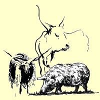 |
Herdentiere
aus den Pusztagebieten, wie das
Sz�rkemarha, das
Rackajuh und das Wollschwein Mangalitza liefern heute das
Grundmaterial für Pörkölt und Gulaschsuppe.
Sie werden ganzjährig im Freien gehalten und sind bei
extensiver Bewirtschaftung eine der touristischen Attraktionen in der Hortobágyer Puszta bei Debrecen.
Da die EU-Hausschweine genetisch überzüchtet auch unter Konstruktionsfehler leiden
(mit 1-2 zugez�chteten Rippen l�nger vertragen sie das �bergewicht zwischen
den Pfoten nicht), fand man ihre genetische Rettung beim ungarischen Wollschwein "Mangalitza".
Genauso wird auf das genetische Material
des ungarischen Zackelschafes zurückgegriffen, das nah verwandt ist mit den
genetisch fehlgez�chteten und dadurch krankheitsgeplagten Heideschnucken in der Lüneburger Heide.
|
|
Die
ungarischen Pusztahirte haben mindestens über Tausend Jahre
lang
das genetische
Material Ihrer Herdentiere in ihrer ursprünglichen Form bis
heute retten können. Sie schmecken anders, als die Haustiere
nach Brüsseler EU-Norm und sorgen für die einmalig
hervorragende
Stellung der ungarischen Küche unter den großen
Küchen Europas. Die EU-Schreibtischtäter haben
die Schuld, wenn die Ungarinnen in den
Lebensmittelgeschäften kaum
noch Fleisch aus dieser gesunden einheimischen Produktion finden.
Es
wäre sowohl aus ökologischer, als auch aus
ökonomischer Sicht
unverzeihlich, wenn die ungarischen Hirte ihre Jahrtausende alte
Tätigkeit nach dem EU-Beitritt des Landes auf die
Brüsseler
Gesetzgebung anpassen und auf die industrielle Massenproduktion
umstellen sollten. Hätten sie das vor Jahrzehnten getan, wie
z.B. die
deutschen Landwirte, dann wäre das genetische Material
für die
Rückkreuzung der EU-Schweine und L�neburger Heideschnucken nicht mehr vorhanden.
|
| 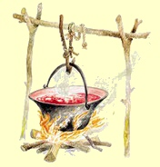 |
Gulasch oder
Pörkölt? Die Rinderhirte der Puszta
kochen ihre Suppe seit eh und je in Kesseln. Das Kesselgulasch mit viel Gem�se hat eine
andere Rezeptur, als die ungarische Gulaschsuppe.
Die
Namensgebung
ist schon verwirrend, denn das ungarische Wort Gulyás in
Ungarn ausschließlich für die Gulaschsuppe steht.
Das in Deutschland als Gulasch bezeichnete Gericht ist ein Tellergericht und wird in Ungarn
Pörkölt genannt.
Während Pörkölt in Wien
noch immer Pörkölt hei�t und so gekocht wird,
ähnelt
Gulasch dem Pörkölt umso weniger, je weiter man in
Deutschland von Ungarn entfernt ist. |
|
|
Die deutsche und die ungarische Gulaschsuppe sind miteinander nicht zu
vergleichen.
In Ungarn ist die Gulaschsuppe eine d�nne Suppe von hoher
Qualit�t und in Deutschland eher ein Eintopfgericht. In
Deutschland werden meist nur die Fleischreste, in Ungarn jedoch die
besten Fleischstücke
verwendet, oft das beste Rinds- oder Kalbsfilet. So fühlt
sich ein jeder
Ungar unangenehm überrascht, manch einer sogar beleidigt, wenn
ihm in einem deutschen Restaurant Gulasch
serviert wird. Und weil die Ungarn Gulasch als
Landesspezialität betrachten, wollen sie gar nicht wahr haben,
dass das original Gulaschrezept von einem irischen Mönch aus
München nach Ungarn gebracht wurde - kurz vor der
Krönung des Hl. Stefans. - Übrigens: Irish Stew
erlitt bei der Auswanderung nach Nordamerika das gleiche
Schicksal, wie die Gulaschsuppe in Deutschland und wird im Übersee meistens
als dickflüssiges
Eintopfgericht mit viel Inhalt, oft
mit Mais u.a. Gemüsesorten gekocht, die man in Irland kaum kennt.
|
|
|
|
|
|
Ungarisches
Gulasch / P�rk�lt |
|
|
...wird seit Jahrhunderten grunds�tzlich aus Lamm- oder Schweinefleisch gemacht
|
Zutaten:
750 g Lamm- oder Schweinefleisch (Schulter oder Schlegel), 1
Batzen Schmalz, 750 g (6-8 St.) Zwiebeln, 2-3 wei�e bzw. gelbspitze Paprikaschoten,
evtl. 250 g Champion, 2 geh�ufte Teel�ffel Paprikapulver
edels��, 2 geh�ufte Teel�ffel Paprikapulver rosenscharf, Salz,
2 TL schw. Pfefferpulver oder 1 EL geriebenes Bohnenkraut oder
ein Handvoll frisch, 2
gro�e Tomate oder entsprechende Menge Tomatenmark, 200 ml
Rotwein oder Fleischbr�he.
|
|
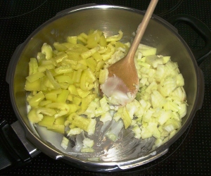 |
Zubereitung
- Schritt 1:
Topfboden einfetten,
Zwiebeln grob schneiden, Paprikaschoten zerkleinern. Im hei�en Fett bei
niedriger bis mittlerer Temperatur anschwitzen lassen und glasig bis
goldgelb schmoren. Diese Prozedur dient der
Krustrierung bzw. Karamellisierung, die f�r den sp�teren
Geschmack notwendig ist. Pfeffer oder Bohnenkraut, einen
Teil von Salz kann man schon beim Anschwitzen zugeben. Mit
Salz soll man sich zur�ckhalten beim Schmoren, davon
verliert das Gem�se seinen Saft, schmeckt bitter und trocken. Viele
geben das Salz erst beim letzten Schritt dazu, wenn das
Fleisch gekocht wird. Bei uns hat sich eingeb�rgert, dass
wir auch noch Champignons, meistens Dosenchampignons
mitschwitzen lassen.
Hauptsache, mindestens soviel Gem�se, wie Fleisch, denn
Zwiebeln und Paprikaschoten verschwinden zwar spurlos,
bestimmen aber den Geschmack. |
|
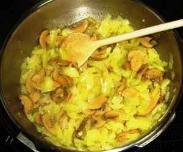 |
Zubereitung
- Schritt 2:
Hat man das Gem�se bei Niedrigtemperatur geschmoren, so wie
am Bild links, braucht man den Topf nicht vom Herd nehmen
w�hrend der Untermischung von Paprikapulver, so wie
m�chtegern Spitzenk�che in Kochstudios mit dem Wissen
angeben, dass das Paprikapulver bei h�heren Temperaturen
verbrennt. Wichtig dabei ist, dass das Gem�se reichlich vom
Fett �berzogen gl�nzt auch dann, wenn man das Paprikapulver
schon im geschmorenen Gem�se verr�ht hat.
Nun wird
das gew�rfelte Fleisch im von Paprika rotgef�rbten Sud von allen
Seiten angebraten. Damit es richtig anger�stet wird, erh�ht
man w�hrenddessen die Kochtemperatur. Dieses R�sten hei�t
"P�rk�lt" und das Verfahren ist "p�rk�lni" auf Ungarisch und
ist der Namensgeber des Gesamtgerichtes P�rk�lt in Ungarn,
bzw. Ungarisches Gulasch im deutschsprachigen Raum. |
|
|
Zubereitung weiter: Nachdem das Fleisch von
allen seiten anger�stet ist, hat man die Wahl, ob man nun
P�rk�lt oder Serbisches Reisfleisch - bzw. "" auf Ungarisch - daraus macht, denn soweit ist
die Zubereitung beider Gerichte identisch mit dem Vermerk,
dass zum Serbischen Reisfleisch das Fleisch in Stifte
geschnitten wird oder (meistens) man verwendet Hackfleisch.
Wir kochen hier P�rk�lt. Dazu gibt man nun die
kleingeschnittenen Tomaten und evtl. noch Tomatenmark bzw.
Tomatenkreme dazu, damit der Kochsud dickfl�ssiger wird. Nun
k�nnen die restlichen Gew�rze zugegeben werden, deren Menge
gewisse Erfahrung ben�tigt f�r den idealen, in Ungarn
gew�hnlichen Geschmack. Nun wird alles mit so wenig wie
m�glich Wasser bedeckt und im bedeckten Topf so lange
gekocht, bis das Fleisch gar ist. Gelegentliches Umr�hren ist
bei wenig Sud
erforderlich, dabei sollte man die verdampfte
Kochfl�ssigkeit entweder mit Wasser oder Rotwein nachf�llen.
Die Kochzeit betr�gt mindestens eine Stunde, ein
Schnellkochtopf verk�rzt zwar die Zeit, aber das Gericht
Schmeckt dann anders.
|
Vermerk:
mischt man am Ende Sauerrahm in den Sud, dann spricht man
nicht mehr von P�rk�lt. Dazu werden in 200 ml Sauerrahm bis
zu 2 EL Mehl unterr�hrt, bis die Mischung geschmeidig ist und
darin sich keine Mehlklumpen mehr befinden.
So ein Gericht nennt man in Ungarn Paprikasch
- allerdings kocht man Paprikasch �blicherweise aus
Gefl�gelfleisch. Sauerrahm mildert die Sch�rfe von Paprika,
macht das Gericht magenfreundlich, allerdings nur solange,
bis man frischen Sauerrahm verwendet, der in k�rzester Zeit
von Aerobakterien befallen wird und f�r magenempfindliche
Personen nicht mehr geeignet ist. Paprikasch sollte man
daher nicht wieder aufw�rmen.
|
Serviervorschlag: Pörkölt
wird in Ungarn nach jahrhundertelanger Tradition aus
Lammfleisch zubereitet. Als Beilagen serviert man Nokedli (dt.
Kn�pfli, Knobben, Nockerli), Csipetke (dt. Zupfnudeln) oder
Eiergraupen. Die ungarischen Nokedli sind
identisch mit Spätzle in Form
von Kn�pfli bzw. bayerischen Knobben. In Ungarn verspeisen viele das P�rk�lt mit
Tarhonya (dt. Eiergraupen), wie am Bild unten rechts. Letztere erfordern einen kr�ftigen
Magen und sind wahrscheinlich deswegen relativ unbeliebt. Nur
zum P�rk�lt aus Rindsfleisch wird Salzkartoffel bevorzugt. Ein Brotkorb und
Gew�rzstreuer geh�ren auf den Tisch. P�rk�lt aus Lammfleisch
(dt. Lammgulasch) wird in der
Landgastst�tte
mit eigener Konditorei in der Pusztagemeinde R�calm�s an
der Donau landestypisch mit Nokedli so serviert:
|
|
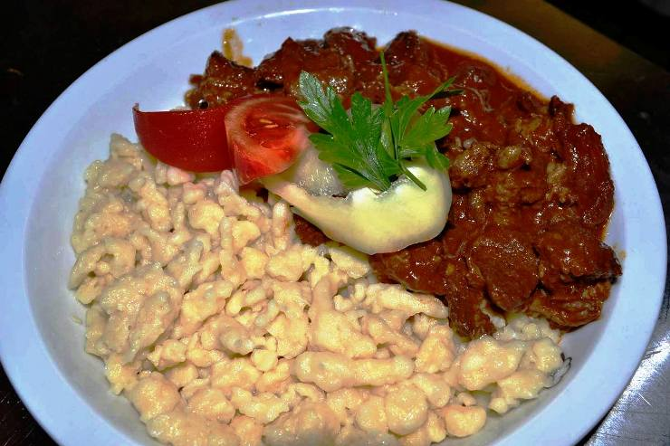 |
| |
|
Deutsche
Gulaschgerichte sind P�rk�ltgerichte in Ungarn. Beliebt in Ungarn
mit Kn�pfli, ungarisch: Nokedli |
| |
|
|
Beilagen:
Kopfsalat, Gurkensalat, Kartoffel-Zwiebelsalat, Sauerteiggurke.
|
Getränke dazu:
Vor dem Pörkölt schmeckt am besten H�zipálinka (Hausgemachter
Schnaps). Wie bei allen Gerichten aus rotem Fleisch
empfehlenswert sind Rotweine, z.B. ein
trockener Merlot aus den s�dlichen Weinbaugebieten Villány und Szeksz�rd.
|
| |
| |
|
Rindergulasch / Marhap�rk�lt |
| |
|
Rindergulasch bzw. P�rk�lt wird in Ungarn besonders gern
verzehrt mit den von den Donauschwaben eingeb�rgerten Nokedli
(Kn�pfli) oder
auch mit Salzkartoffeln, worauf die Juden bestehen. Das Rezept f�r Rindergulasch
mit Salzkartoffeln erschien in einem Kochbuch zuerst in Prag, 50 Jahre sp�ter in
Wien und weitere 50 Jahre sp�ter in Ungarn. Das hat
allerdings nichts mit dem Rindergulasch zu tun, das schon im
K�nigshaus des Hl. Stefans und sp�ter in den herrschaftlichen
H�usern bekannt war, sondern mit der
zeitlich langsam voranschreitenden Erweiterung des
Kartoffelanbaugebietes, zuerst aus Italien nach Norden und aus
dem badischen Gebiet in Richtung Osten w�hrend der K. und
K. Monarchie. Die Ungarn haben sich lange gegen den
Kartoffelanbau gewehrt, denn sie haben fr�her die
Sellerieknolle f�r den gleichen Zweck angebaut. Eine Woche
in
Milch
gelegt und im Essigwasser gekocht schmeckt die Knolle
�hnlich, wie Kartoffel. Wer wei� sowas heute? Milch und
Weinessig gab es schon immer auf dem Bauernhof, meistens als
Nebenprodukt in H�lle und F�lle
kostenlos. Bauern geht es immer um die Existenz der Familie
und experimentieren mit neuen Pflanzen ungern. Erst steuerliche Anreize von Joseph II. (Sohn der
Maria Theresia) f�hrten in Ungarn in den 1780er Jahren zum zwangsweisen
Kartoffelanbau. Der ungekr�nte K�nig der Ungarn
war seiner Zeit weit voraus ein moderner K�nig, f�hrte viele
vern�nftige, vor allem wirtschaftliche Reformen durch und sah
in den Kartoffeln eine gro�e Steuerquelle. Ob er schon das
W�sserchen Vodka aus Kartoffeln kannte, das wissen wir nicht,
abh�ngig war er aber bekanntlich. Er vermied jeden Konflikt im
eigenen Land, so setzte er seinen Anbauzwang mithilfe von
staatlicher Unterst�tzung durch
und die Sellerieknolle wurde in den darauffolgenden gut zwei
Jahrhunderten in Ungarn fast vergessen. |
| |
|
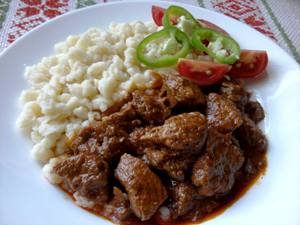 |
Rinderwade hei�t Marhal�bsz�r
auf Ungarisch und ist am besten geeignet f�r
Rindergulasch. Die Rinderhesse bzw. Rinderhaxe
schmeckt genauso, ist daher ebenso geeignet, stammt lediglich aus dem tieferen
Bereich des Unterbeins.
Zutaten: 750 g Wadschinken von Jungrind, 750 g (6-8 St.)
Gulaschzwiebeln,
3 EL Schmalz zum Zwiebelschmoren, wenig Selleriegr�n, 1 Tomate, 1 Paprikaschote,
2 Knoblauchzehen, 3 EL Paprikapulver (je zur H�lfte
rosenscharf und edels��), 2 TL Pfefferpulver, 2 EL
Mehl zum Binden, 1,5 L Rotwein (Merlot) oder
Rinderbr�he, Salz. Evt. weitere Gew�rze:
3 Wacholderbeeren feingehackt, 1/2 TL Majoran, 1/2 TL
Thymian, 1 TL K�mmel
Zutaten f�r Nokedli (Kn�pfli): 400 g Mehl, 1
Ei, 2 TL Salz, Wasser. |
|
|
Zubereitung:
Zwiebeln, Tomate, Selleriegr�n und Paprikaschote
kleinschneiden, das Fleisch in ca. 3x3 cm W�rfel schneiden,
Knoblauchzehen zerdr�cken und feinhacken. Schmalz im Kochtopf
erhitzen und die Zwiebeln darin langsam goldgelb anr�sten.
Paprikaschote, Selleriegr�n, Salz, Paprika- und Pfefferpulver
zugeben und kurz mitr�sten. Tomate, Knoblauch und die
Fleischw�rfel zugeben und alles nochmals anr�sten, bis das
Fleisch �berall eine wei�liche Kruste (daher die ungarische
Bezeichnung P�rk�lt) bekommt. Mit 1 Liter Wasser und 1 Liter
Rinderbr�he aufgie�en, zugedeckt ca. 2 Stunden das Fleisch
weich d�nsten. W�hrenddessen �fter umr�hren und bei Bedarf in
der Reihenfolge Rinderbr�he, Rotwein nachgie�en. Ist das
Fleisch gar, mit 2 EL Mehl binden, mit dem restlichen Rotwein
auff�llen und weitere 1/2 Stunde aufk�cheln. Vor dem Servieren
abschmecken, bei Bedarf mit Salz und Pfeffer nachw�rzen.
Aus den genannten Zutaten Nokedli (Kn�pfli) zubereiten.
Serviert wird meistens mit Nokedli (Kn�pfli) oder
auch mit Salzkartoffeln.
Vermerk: |
-
In einem Schnellkochtopf
wird das Rindergulasch in ca. 30 Minuten gar, es schmeckt
jedoch etwas anders, als im herk�mmlichen Kochtopf unter
Deckel gekocht.
Warum auch immer, manche m�gen den Geschmack aus dem
Schnellkochtopf nicht, dabei sollen darin gekocht mehr
Mineralstoffe und Vitamine �brig bleiben…
- Die
Kn�pfli werden von den Eiern ansehnlicher gelb gef�rbt,
schmecken nicht so trocken und hart, wie z.B. die
Zupfnudeln aus Mehl, Salz und Wasser. F�r Leute mit guten Z�hnen
empfiehlt sich bis zu 1 Ei pro 100 g Mehl zu verwenden. Die Bissfestigkeit der Pasta ist
auch von der
Menge der beigemischten Fl�ssigkeit (Ei+Wasser) und Butter abh�ngig.
-
Wie in der Gulaschsuppe,
kann man auch hier etwa 2 M�hren, 1 Petersilienwurzel und
ein St�ckchen Sellerieknolle kleingew�rfelt mitkochen.
Noch reichhaltiger wird das Gulasch, wenn man zu Ende der
Kochzeit wenig, getrennt gekochte gr�ne Erbsen dazu
mischt. Das ist aber schon die �berleitung zu einem
Tokanjergericht, wo das Fleisch in Streifen geschnitten
wird und die Sch�rfe nicht von Paprika, sondern vom
Pfefferpulver kommt, so wie zu Uromas Zeiten, als die
ungarischen Kochb�cher von einem Paprikam�hlenbesitzer
noch nicht bereichert bzw. verf�lscht waren.
|
|
|
|
|
|
Gulasch
ist in Ungarn immer eine Suppe |
|
|
In
Ungarn kennt man grundsätzlich zwei verschiedene
Gulaschsuppen
|
- Gulaschsuppe
hat wenig Inhalt, wird vornehm serviert und gehört
in die feine Küche. Sie wird aus Fleisch und wenig
Gemüse
gekocht - vergleichbar mit einer Kraftsuppe bzw Bouillon mit
wenig Inhalt.
- Kesselgulasch
ist eine Suppe mit viel Inhalt. Das Rezept ist
variantenreich, verlangt etwas Phantasie und wurde
von Schäfern, Rinderhirten und
Fischern in der Pußta entwickelt.
|
| |
|
Gulaschsuppe / Guly�s, Guly�sleves |
| |
|
|
Zutaten: 500
g Lamm- oder Schweinefleisch, 500 g Gulaschzwiebeln (4-5 St.), 1 Batzen Schmalz, 2-3 Knoblauchzehen, 3-4 Paprikaschoten,
2 Tomaten, 1 kg Kartoffeln, 2 M�hren, 1 Wurzelpetersilie, von Paprikapulver 2 EL edelsüß und 2 TL
rosenscharf, Salz. In Gew�rzbeutel: 5 schw. Pfefferk�rner, 1/4 TL K�mmel und evtl.
noch 5 Korianderk�rner.
Von Zwiebeln sollte man soviel nehmen, wie vom Fleisch. Sie werden
vollst�ndig zerkocht bzw. aufgel�st und dienen in Ungarn als wichtigster
Geschmackstr�ger der Gulaschsuppe. |
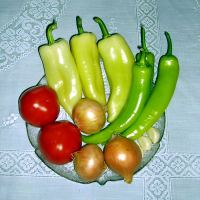 |
| |
Zubereitung: In
einem großen Topf die kleingehackten
Zwiebeln salzen, im Fett goldgelb schmoren,
vom Herd nehmen, Paprikapulver, zerdrückte Knoblauchzehen, das
in kleine Würfel geschnittene Fleisch dazugeben und wenden,
bis auf allen Fleischstücken eine angeröstete Kruste gebildet wird. Kleingeschnittene
Paprikaschoten und Tomaten dazu mischen und würzen. Topf
mit Wasser füllen, bis alles bedeckt ist. Kochvorgang ist
abhängig vom Herd, Topf und vor allem von der Gr��e der Fleischw�rfel, die
gar gekocht werden m�sssen.
Abschmecken
und die in Scheiben geschnittene Petersilienwurzel, Karotten und die
in 1-1,5 cm gro� gew�rfelten oder d�nn gespaltenen Kartoffeln dazugeben.
Die Kartoffeln ben�tigen die Zugabe von Salz, max. 15 Minuten lang
weiterkochen.
Zubereitung im Schnellkochtopf:
...darin ist das Fleisch in 25 Minuten gar gekocht,
anschließend Topf �ffnen, abschmecken und nach Bedarf nachwürzen. In
Scheiben geschnittene Petersilienwurzel, Karotten und die
in 1-1,5 cm gro� gew�rfelten oder d�nn gespaltenen Kartoffeln dazugeben.
Die Kartoffeln ben�tigen die Zugabe von Salz, max. 15 Minuten lang
weiterkochen. F�r das Gem�se ist es unwichtig, ob der
Schnellkochtopf zugeschlossen wird oder nur abgedeckt, die
Gem�se-Kochzeit ist etwa gleich und betr�gt ca. 15 Minuten.
Tipp:
Wir kochen regelm��ig im Schnellkochtopf, an Feiertagen
jedoch stundenlang im traditionellen Topf aus folgendem
Grund. Trotz allerlei Versprechungen in den
Gebrauchsanweisungen der Schnellkocht�pfe, das schnell
gekochte Fleisch schmeckt anders, die fertige Suppe schmeckt
eint�nig, weil bestimme Aromen unterdr�ckt und andere sich
nicht entfaltet werden k�nnen w�hrend der gek�rzten Kochzeit. Bei
unseren Bekannten mit ihrem neuartigen Kochautomaten haben
wir in dieser Hinsicht noch schlimmere Erfahrung gesammelt.
Wir meinen, wenn Sie unbedingt viel Zeit und m�glichst die
ganze Arbeit ersparen
wollen, pulverisieren sie alles in einem Multizerkleinerer
und kochen das Ergebnis zu einer Br�he zusammen, das ist
dann ideal f�r Zahnlose, die nicht bei�en k�nnen und in den
Altersheimen es nicht wagen, sich �ber das Essen zu
beschweren.
|
| Servieren:
Am Tisch sollte ein voller Brotkorb, ferner
Salz-, Paprika-, Pfefferpulverstr�uer und Chiliflocken zum
individuellen Nachw�rzen bereit stehen. Bild rechts:
Beh�lter f�r edels��en Paprika und Salz. |
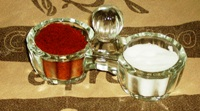 |
|
|
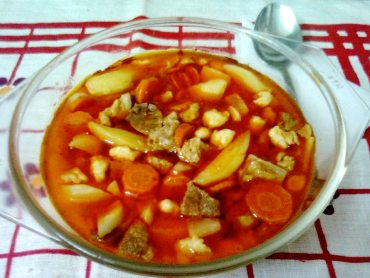 |
Gulaschsuppe mit Rindfleisch und Kartoffel,
eine j�dische
Gulaschvariante bei
in Wien |
Gulaschsuppe mit Lammfleisch und Zupfnudel
zu Hause beim
Chefkoch einer Landgastst�tte |
Getr�nkevorschlag: Vor
dem Essen trinkt man
H�zip�linka (Hausgemachtes) oder Aprikosenschnaps
(Barackpálinka) oder den Magenbitter Unicum bei
Rindsfleisch.
Passender Wein: Dunkler
Portugieserr aus Vill�n, Kadarka, Merlott, Stierblut aus
Szeksz�rd (identisch mit Bordeaux). |
| |
 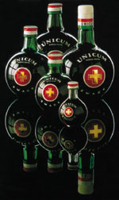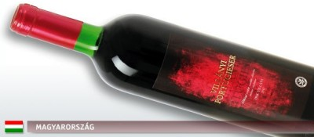 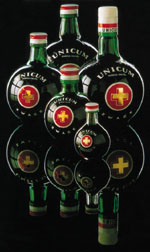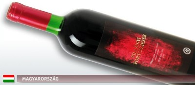 |
| |
| |
| |
| |
|
Kesselgulasch / Bogr�csguly�s |
| |
|
Das Bild links zeigt,
wie Kesselgulasch in der Puszta von den Rinderhirten bei
Lagerfeuer zubereitet wird. Als Fleisch a�en sie Lamm-,
Gefl�gel- oder Schweinefleisch, alles andere als Rindsfleisch,
denn das Vieh mussten sie vollz�hlig abliefern, tot oder
lebendig, vom umgekommenen Schaf nur das Fell.
Das Bild rechts zeigt die
wichtigsten Zutaten zum
Kesselgulasch: Zwiebeln, Knoblauch und Paprika. Der Inhalt ist
variantenreich. Gourmetköche kochen die Gulaschsuppen oft im
Wein oder Bier. Einmal ausprobiert, wei� man warum... |
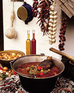 |
Zutaten: 1
kg Lammfleisch, 1 kg Gulaschzwiebeln (8-9 St.), 750 g festkochende Kartoffeln,
5 gro�e M�hren, 2 gro�e Petersilienwurzel, 5
Knoblauchzehen, 1 St�ckchen Sellerieknolle, 2-3 wei�e bzw. gelbspitze Paprikaschoten, 1
große Tomate, evtl. 5 Schnittlingshalme, 1 Bund
Selleriegrün, 1/2 TL Kümmel, Paprikapulver 2 TL
edelsüß und 2 TL rosenscharf, 2 Batzen Fett, Salz.
|
|
|
|
Zubereitung: Fleisch
waschen und in 1 cm große Würfel schneiden.
Feingehackte Zwiebeln im Fett auf goldgelb schmoren.
Vom Herd nehmen und Paprikapulver, Knoblauch und Kümmel
dazugeben, umrühren. Den Topf wieder auf den Herd stellen,
Fleisch hineingeben, salzen und bei großer Hitze anbraten, dabei flei�ig
r�hren bis alle Fleischst�cke von einer Kruste bedeckt sind.
Mit Wasser, Wein oder Bier aufgießen und kochen, bis das
Fleisch gar wird.
Kartoffeln pellen und w�rfeln (gleichgro�, wie das Fleisch),
M�hren und Petersilienwurzel waschen und in Scheiben
schneiden. Tomate sch�len und kleinw�rfeln, Selleriegr�n waschen. Wenn das
Fleisch gar ist alles in den Topf geben und weiterkochen, bis
auch die Kartoffeln gar sind. Selleriegr�n absch�pfen und
entfernen.
|
|
|
|
Die
häusliche Zubereitung auf
traditionelle Art zeigt das folgende Video. Was hier unter der
Bezeichnung "Ungarische Gulaschsuppe" vorgef�hrt wird, das
ist lt. Gourmetkoch Karl Gundel "KESSELGULASCH mit viel
Inhalt". ...und hier irrte sich der gro�e Gourmetkoch gewaltig
- aber nicht nur hier.
Sein Kesselgulasch wird in der Puszta seit Jahrhunderten von
den Kumanen (kunok) und Ungarn gleicherma�en als P�rk�lt bezeichnet. Die
schon lange zweisprachigen Kumanen
leben in den Pusztagebieten seit 1241 n.Chr. und haben die
ungarische Sprache erst Anfang des 20. Jahrhunderts zu ihrer
Muttersprache erkl�rt, damit sie nach dem Trianon-Vertrag
nicht eine dritte, slawische Sprache aneignen m�ssten. Sie sind ein Zweig der Kasachen, die aus dem
heutigen Gebiet von Kasachstan unter der F�hrung ihres
Gro�wez�rs K�t�ny nach Westen wanderten, bzw. vor den
Tataren fl�chteten und im Jahre 1241 im Karpatenbecken das
gleiche Schicksaal erlitten, wie die Ungarn. In Kasachstan
wird P�rk�lt aus Lammfleisch in Kesseln genauso
zubereitet, wie bei den Kumanen in den Pusztagebieten....
Wissenschaftler stellten neulich verbl�fft fest, dass ein
Schafskopf in Kasachstan genauso in den Suppenkessel geh�rt
und dort nach dem gleichen Rezept, jedoch ohne Paprikapulver gekocht wird, wie in der
Umgebung der Stadt Karcag im S�dosten von Ungarn, bei den
Nachfahren der Kumanen. Von wegen Ungarisches Gulasch!
|
| |
|
|
| |
Wie
jedes Haus sein eigenes Geheimnis hat, so herrschen in jeder
Küche andere Gewohnheiten. Gulaschsuppe kann man so oder so
zubereiten. Kesselgulasch ist jedoch so original ungarisch, wie die
professionelle K�chin sie in diesem Video unter h�uslichen
Verh�ltnissen zubereitet. Je nach dem, was man
jahreszeitlich bedingt grade zur Verf�gung hat, wird vom
Inhalt dies oder das nicht
immer mitgekocht, aber das Grundrezept mit allem Drum und Dran ist immer gleich
- wie bei Mama und im obigen Video zu sehen ist. In einem ungarischen Restaurant
bekommt man die Gulaschsuppe nach dem vorherigen Rezept viel
d�nner und
mit wenig
"Inhalt", wie der Spitzenkoch Karl Gundel dies beschrieb.
Grundsätzlich gilt für die Gulaschsuppe aus dem Kessel:
|
- Fleisch: Lamm, Schwein, Rind. Alles ist erlaubt, Hauptsache: rotes Fleisch.
- Knochen
k�nnen mit gekocht werden - viele mögen am liebsten
dicke Rippen. In Restaurants meidet
man Knochen in der Gulaschsuppe, weil die Art und Weise, wie
der Gast das Knochengerippe am Tisch geniessen kann, angeblich nicht
zur vornehmen Gastronomie des Hauses passen soll.
- Csipetke, wie im
Video gezeigt und erklärt wird, gehört nicht
unbedingt in die Gulaschsuppe. Die Zubereitung von Csipetke ist
besonders zeitaufwändig
und kann durch Spätzle/Knobben bzw.
ersetzt werden.
Spätzle enthält viel mehr Feuchtigkeit in sich, als
Csipetke, wird nach einiger Zeit in der Suppe klebrig
weich und
wird
daher in unserem gesamten Bekanntenkreis - wenn überhaupt -
immer getrennt gekocht und je
nach
Bedarf individuell zur Gulaschsuppe gereicht.
- Sauerrahm
(Saure Sahne) mildert die Schärfe von Paprika und hilft bei
Sodbrennen, gehört aber nicht zum
Grundrezept von Gulasch, sondern zum Paprikasch, das
vorwiegend mit weißem Fleisch gekocht wird. Manche
mögen Gulasch und Gulaschsuppe trotzdem mit etwas
Sauerrahm. Im Übersee kochen Angeber die
Gulaschsuppe nur im
Sauerrahm (mind. 30% Fettgehalt) oder Wein - da ist nichts mehr übrig vom
Originalrezept,
aber Eva und Zsa Zsa Gabor haben es den Nordamerikanern so
eingeprägt - von wegen Hollywood...
|
|
Serviervorschlag:
zusammen mit den Kartoffeln evtl. auch Zupfnudeln (Csipetke) mitkochen.
Auf den Tisch kommt immer ein voller Brotkorb. Getr�nke wie bei der Gulaschsuppe
....vor
dem Essen trinkt man Hausgemachtes (Házipálinka) oder Aprikosenschnaps
(Barackpálinka) oder einen Kräuterschnaps, z.B. Unicum. Zum
Essen wird ein
Rotwein der Sorte Portugieser aus Villány oder
Stierblutwein
aus Szekszárd und nach dem Essen Bier kredenziert. |
|
|
|
Im Video
wurde alles gezeigt, was in die Suppe kommen kann,
aber vieles davon nicht unbedingt kommen muss. �ber die Anwendung von Vegetapulver bei dieser Zubereitung
kann man streiten. Vegeta enthält zwar nur 15% Trockengemüse und dient
als Geschmacksverstärker, enthält aber
natürliche Inhaltsstoffe, die z.B.
im Gewächshausgemüse aus dem Supermarkt
fehlen. Vegeta hilft diese zu ersetzen und sorgt daf�r, dass Kochanf�ngerInnen weniger falsch machen
k�nnen. Wichtig ist, dass das Salz
Steinsalz und kein Meeressalz ist, denn Jod verdirbt den richtigen
Gulaschgeschmack. Vegetapulver wird in mehreren
L�ndern produziert. Aus Kroatien und der T�rkei enth�lt es
Meeressalz und ist daher nicht zu empfehlen f�r
Gulaschgerichte. |
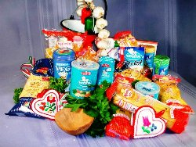 |
|
Puszta
Kesselgulasch / Alf�ldi Bogr�csguly�s |
| |
| - Durch viel Kartoffel und Nudel anders
zuammengesetztes
Rezept
- |
| |
Zutaten: 500 g
Lamm- oder Schweinefleich, 1 kg Kartoffeln, 500 g
Gulachzwiebeln, 2 Tomaten, 2 gro�e M�hren, 1 gro�e
Peterilienwurzel,
1-2
Paprikaschoten,
200 g Zufnudeln, 2-3 Knoblauchzehen, K�mmel, Salz,
Pfeffer,
1 Batzen Schmalz.
|
Zubereitung: Das
Fleisch
in ca. 2x2 cm gro�e W�rfel schneiden. Die kleingehackten
Zwiebeln auf Schmalz oder �l im Kessel schmoren. Paprika
hineingeben, verr�hren, die Fleischw�rfel unterr�hren, salzen,
anr�sten. Nach einigen Minuten die kleingeschnittenen Wurzeln,
K�mmel und ganze Knoblauchzehen hineingeben, mit wenig Wasser
l�schen und zugedeckt, bei kleiner Hitze schmoren. Zeitweise
umr�hren und mit wenigem Wasser nachgie�en. Nach einer halben
Stunde die kleingew�rfelten Kartoffeln, Paprikaschoten und
Tomaten hineingeben. Mit Wasser auff�llen und fertiggaren. In
den letzten 10 Minuten der Kochzeit die Zufnudeln mitkochen.
Abschlie�end nach Salz und
Pfeffer
abschmecken.
|
Servieren: Am
Tisch Wei�brot und scharfes Paprikapulver oder Chilischoten
zum Hineinbr�ckeln bereitstellen. Getr�nke zum L�schen der
Sch�rfe nicht
vergessen.
|
|
|
|
Bohnengulasch / Babguly�s |
| |
|
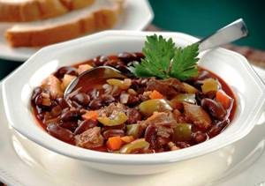 |
Bild links: Bohnengulasch in Ungarn ist
immer eine Suppe mit viel Inhalt.
Wer diese Spezialit�t selbst kochen will, sollte zuerst
Kesselgulasch �ben, denn Bohnengulasch ist eine
Fortentwicklung davon, auch wenn auf den ersten Blick
meistens nur die Bohnen auffallen. - Bohnengulasch wird
jedoch mit anderen Fleischsorten, (z.B. Rinderwade,
Schweinehaxe) zubereitet und dementsprechend
ziemlich anders und recht unterschiedlich gew�rzt.
Beliebte
Beilagen sind Zupfnudel oder Nokedli (Kn�pfli), meistens
verzehrt man jedoch dicke Wei�brotscheiben dazu. |
| |
Zutaten: demn�chst
hier.
|
Zubereitung: demn�chst
hier.
|
| |
| |
| |
|
Pilzragout / Gombap�rk�lt |
| |
|
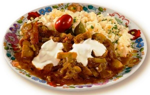 |
Bild links: Gulasch aus Champion, eine Art
Pilzragout, hier mit Eiergraupen serviert
Die Ungarn
nennen das Gericht P�rk�lt, bei uns ist es ein Ragout. Den
Unterschied macht die P�rk�lttechnologie aus,
dementsprechend wird das Gericht in Ungarn anders zubereitet
und dadurch schmeckt es anders, auch wenn man die gleichen
Gew�rze verwendet.
Dieses vegetarische Schnellgericht zeigt
zugleich, es muss nicht immer
Fleisch sein! Statt Fleisch werden Pilze, bevorzugt Waldpilze,
wie Pfifferlinge, Maroni u.a. verwendet. |
|
|
|
Zutaten, Zubereitung
und deutsche Beschreibung siehe unter
dem Video: |
|
|
|
|
|
|
Zutaten f�r 4
Personen: 400 g Pilze (Pfifferlinge oder Champions),
Fetter Speck, 3-4 Gulaschzwiebeln oder 1 Bund Fr�hzwiebeln, Salz, Pfefferpulver,
Paprikapulver edels��, entweder Thymian oder gemahlener K�mmel, 2 Knoblauchzehe, 1
EL Butter. Nicht zum Grundrezept geh�rt aber oft mit gekocht
werden 1 Paprikaschote, 1 Tomate, 1 TL Mehl und/oder evtl.
etwas Sauerrahm.
Zubereitung:
Pilze waschen und in nicht zu d�nne Scheiben schneiden.
Zwiebeln in grobe Scheiben schneiden, Knoblauch zerquetschen
und feinw�rfeln, Speck, Tomate
und Paprikaschote in kleine W�rfel schneiden.
Speck in der Pfanne zum Schwitzen bringen, die Zwiebeln
darin glasig d�nsten, Knoblauch, Paprikaschote und Tomate dazu
geben und kurz d�nsten, Pilze dazu geben. Salzen und unter
Deckel solange schmoren, bis die Pilze etwa zur H�lfte
zusammenfallen. Ohne Deckel bei schwacher Hitze solange
weiterkochen, bis der Sud verdampft. Butter und Paprikapulver
verr�hren, abschmecken, die restliche Kochfl�ssigkeit mit
wenig Mehl binden.
|
Serviervorschlag:
Pilzp�rk�lt mit mit
Sauerrahm oder
Cr�me fra�che binden. Wer es mag, kann daraus eine
Mehlschwitze zubereiten und das Gericht damit binden. Als
Beilage eignen sich hervorragend die Nudelsorten
(Zupfnudel),
(Kn�pfli) oder
(Schupfnudel).
|
Vermerk: Verwendet man Sauerrahm zur
Bindung,
dann ist es ein Paprikasch und kein Gulasch bzw. P�rk�lt, zumindest lt.
Kochbuchautor Karl Gundel junior, dem international hoch
angesehene Kochbuchautor, der die ungarische Hauptstadt und
dort die K�chen von 5-Sterne-Hotels gut kannte, weil er diese
belieferte, aber nicht das Land der Magyaren, ebensowenig die
Landesk�che, wor�ber er sogar Lehrb�cher ver�ffentlichte - so ein
Schmarrn!
|
|
|
|
|
|
Wildgulasch / Vadas p�rk�ltek |
| |
| |
|
Hasenp�rk�lt / Ny�lp�rk�lt |
| |
Zutaten: 6 Hasenkeulen, 100 g R�ucherspeck, 100 g Fett,
4 Gulaschzwiebeln, 6 Knoblauchzehen, Paprikapulver 10 g edels�� und 5
g rosenscharf, 1 TL Salz, 1 TL Tomatenmark, 2 wei�e bzw. gelbspitze
Paprikaschoten, 0,5 l roter Sauvignonwein.
Zubereitung: Die Keulen von Haut und Sehne befreien, an
den Gelenken zertrennen, waschen und mit dem R�ucherspeck
spicken. In einer Pfanne die gehackten Zwiebeln glasig
werden lassen, die Keulen darin anr�sten und mit dem
Paprikapulver bestreuen, �fter wenden, anbraten, die Pfanne
mit dem Rotwein f�llen. Knoblauch, Salz, Tomatenmark dazugeben
und das Fleisch zugedeckt d�nsten, �fter wenden.
Wenn das Fleisch gar ist, die Paprikastreifen in der Pfanne
kurz weichkochen und abschmecken.
|
Serviervorschlag:
Salzkartoffel und Sauerteiggurken als Beilage.
Getr�nkevorschlag: Hausgemachter Schnaps
oder ein Unicum vorher,
Portugieser oder Merlot dazu und ein Altbier nachher. |
|
|
|
Unicum
ist ein in Ungarn beliebter, hoch angesehener Magenbitter.
Unicum unterscheidet sich von allen anderen Magenbittern und
vor allem von den Kr�uterschn�psen dadurch, dass man vom
40%igen Unicum
zwar schnell benebelt wird, aber niemals Kopfschmerzen bekommt
- dank einer streng geh�teten Geheimrezeptur der Familie bzw.
Firma Zwack.
Das Firmengeheimnis besteht aus einer sorgf�ltig ausgew�hlter
Mixtur der verwendeten Kr�uter. So werden Wermut (enth�lt
Nervengift) und einige andere Kr�uter nicht
verwendet, die Kopfschmerzen verursachen, ferner verzichtet
Zwack auf schwefelhaltige Grundstoffe im alkoholischen
Destillat. Leider stimmt
das bei den neuartigen Unicum-Lik�rvarianten nicht mehr, wenngleich
auch auf diesen Flaschen das Schweizer Kreuz ein Medikament
signalisieren soll. Das tat zuerst der Hofarzt Zwack im Jahre 1790,
als er dem ungekr�nten
Kaiser Joseph II mit seinem Kr�uterschnaps ein Medikament vorgaukelte. Der Kaiser
war prompt begeistert und lobte es als Unicum, glaubte sogar an die Heilkraft
der darin enthaltenen Kr�uter - so die zwacksche Firmenlegende, in der
sorgf�ltig verschwiegen wird, dass der damals schon
bettl�gerige, todkranke Kaiser kurz danach verstarb -
wom�glich direkt vom Unicum... |
|
Reh- und Hirschp�rk�lt / Őz- �s szarvasp�rk�lt |
| |
Zutaten: 1
kg Reh- oder Hirschkeule (ohne Knochen), 1 Batzen Fett, 4 Zwiebeln, 9
Knoblauchzehen, Paprikapulver 10 g edelsüß und 5 g
rosenscharf, 1 Priese
gemahlener Kümmel, Salz, 1 große Mohrrübe,
1/4 Sellerieknolle, 1 gelbspitze
Paprikaschote, 1 EL Tomatenmark, 1/2 Flasche roter Sauvignon, 1 kg
Erdäpfel.
Zubereitung: Die
Haut und Sehnen vom Wildbret entfernen, das Fleisch grob
würfeln, waschen
und ins Eiswasser legen.
Das
Gemüse und die Erdäpfel waschen und in kleine
Würfel
schneiden.
Im
Fleischtopf die feingehackten Zwiebeln in reichlich Fett glasig schmoren,
mit
Paprikapulver und Knoblauch vermischen, das
Fleisch darin anrösten, Salz,
Kümmel, Tomatenmark zugeben, das Fleisch 10 Minuten lang
anbraten, dabei oft
umrühren, bis sich am Fleisch �berall eine Kruste gebildet hat. Gemüse, Rotwein und etwas Wasser zugeben
und zugedeckt dünsten. Ist
das Fleisch gar, kann man eine Handvoll auf ca. 1x1x1 cm gew�rfelten Kartoffeln und die
gew�rfelte
Paprikaschote dazugeben und weiterkochen, bis die Kartoffeln gar
sind. |
|
Serviervorschlag:
Salzkartoffel und Sauerteiggurke als Beilage.
Házipálinka
(hausgemachter Schnaps) oder
Unicum vorher,
roter Portugieser oder Merlot dazu und ein Altbier nachher. |
|
Tokanjer ist ein Tellergericht, �hnelt dem P�rk�lt, wird
jedoch etwas anders zubereitet. Tokanjer bedeutet:
|
-
Ist wie Ragout - keine Suppe!
- In Tokanjer kommt grunds�tzlich
Salz und Pfeffer
oder Bohnenkraut (ungarisch: Borsikafű
bzw. Csombor), niemals
Paprikapulver!
- In den ersten bekannten
Tokanjerrezepten wurde das Fleisch kleingeschnitten, es
gab jedoch keine Regelung daf�r, ob in Streifen oder
W�rfeln - heute ird das Fleisch in Streifen
geschnitten.
- Der Sauerrahm kamen erst im 19.
Jahrhundert unter dem Einfluss franz�sischer K�che ins
Rezept, die damals in den Budapester Luxushotels
massenhaft besch�ftigt waren.
- Tokanjer aus Rindfleisch nach dem
obigen, heute gebr�uchlichen Rezept ist absulut identisch mit dem russischen Tellergericht
Beef Stroganoff.
|
Aus historischer Sicht betrachtet ist der Tokanjer der direkte
Vorg�nger aller Gulaschgerichte aus Zeiten, als das
Paprikapulver in Ungarn noch teuer und weitgehend unbekannt
war. Der Tokanjer ist vielerorts weiterhin der
Renner in der traditionellen ungarischen K�che, vor allem in
den nord�stlichen Landesteilen und
Siebenb�rgen w�rzt man ihn und sogar die Gulachgerichte auch heute noch
mit dem ungarischen Bohnenkraut Csombor bzw. Borsikafű,
das in den �stlichen Karpaten in der Natur �ppig w�chst, in
h�uslichen G�rten kultiviert wird, pfeffer�hnlich schmeckt und
daher in Ungarn vielerort als Pfefferersatz verwendet wird.
Vor allem ist Bohnenkraut magenfreundlich und im Gegenatz zum
Pfeffer, ben�tigt man keine weiteren Zutaten zur Milderung der
Sch�rfe - wie bei Paprika.
TOKANJER GRUNDREZEPT:
|
Zutaten: 800 g Kernfleisch vom Schwein oder Lammkeule, 1
Batzen Schmalz, 100g Räucherspeck, 500 g (4-5 St.) Zwiebeln,
1-2 Knoblauchzehen (muss nicht sein), 1 Handvoll Bohnenkraut
oder 2 EL Pfefferpulver, 10 g Salz, 2 kleine Tomaten, 1 gro�e
Paprikaschote, 0,3 l Sauerrahm oder Schmand, 30 g Mehl. Evtl. 1/2 Liter Wei�wein oder
Malzbier,
bei Lammfleisch immer Rotwein oder Malzbier.
Zubereitung:
Das Fleisch in fingerdicke Streifen schneiden und gr�ndlich
waschen. Den R�ucherspeck in d�nne Streifen schneiden, im Fett
anschwitzen. Feingehackte Zwiebeln zugeben und
auf goldgelb schmoren. Die kleingeschnittene Paprikaschote und
Tomaten untermischen, das abgetupfte Fleisch zugeben und
verr�hren. Mit Pfeffer und wenig Mehl bestreuen, erneut verr�hren.
Mit wenig
Wasser aufgießen, bei geringer Hitze halb zugedeckt d�nsten. Gelegentlich
Wasser nachf�llen, in der letzten halben Stunde evtl. mit Wein oder Bier. Salzen
sollte man sp�ter, damit das Fleisch seine eigene Fl�ssigkeit
beh�lt und nicht hart wird. Ist das Fleisch beinahe
gargekocht, salzen und fertig garen.
Einbrenne: Mehl in
Sauerrahm verrühren, in den Tokanyer mischen,
kurz aufkochen und heiß servieren.
Beilagen:
Csipetke oder Nokedli bzw. Sp�tzle.
Wei�brot sollte am Tisch griffbereit stehen. Gelegentlich wird auch mit gekochten Kartoffeln serviert, dann
geh�ren auch Sauerteiggurken
auf den Tisch.
|
|
�brigens: |
- In Tokanjer kommt grunds�tzlich
kein Paprikapulver!
- In den ersten bekannten
Tokanjerrezepten wurde das Fleisch kleingeschnitten, es
gab jedoch keine Regelung daf�r, ob in Streifen oder
W�rfeln.
- Das Fleisch in Streifen
geschnitten und der Sauerrahm kamen erst im 19.
Jahrhundert unter dem Einfluss franz�sischer K�che ins
Rezept, die damals in den Budapester Luxushotels
massenhaft besch�ftigt waren.
- Tokanjer aus Rindfleisch nach dem
obigen, heute gebr�uchlichen Rezept ist absulut identisch mit dem russischen Tellergericht
Beef Stroganoff.
|
|
|
|
|
|
Getr�nke zu den
Gulasch- und Tokanjergerichten |
|
|
|
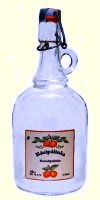 |
Der Durst k�ndigt sich bei allen
Gulaschgerichten an. Wer vor dem Essen noch keinen
Hunger hat, sollte zuerst seinen Gaumen mit Házipálinka (hausgemachter Schnaps)
ölen, damit es besser mundet und nach dem Essen
benötigt man schon einige Durstlöscher sowieso.
Zu
Gulaschgerichten aus rotem Fleisch serviert man Roten Sauvignon,
(ein Cuv�e � la Bordeaux,
�berwiegend aus Merlot) oder ein Pils.
Zu Gulaschgerichten aus Pilz oder mit wei�em
Fleisch, wie Gefl�gel und Fisch, serviert man einen
süßen Weißwein, wie Graumönch bzw. Rul�nder, Lindenblatt, Zweigelt oder ein Pils.
Mit einem weiteren H�zip�linka
(hausgemachter Schnaps) besorgt man sich einen kurzen Tiefschlaf
und dass man �ber der Null-Promille-Grenze in Ungarn nicht mehr fahren darf.
Da hilft kein Espresso oder Kapuziner
(Cappuccino) mehr. |
|
Viktor Orb�n sei
Dank für die Legalisierung des Hausgemachten in Ungarn. Als
die großen Brennereien, vor
allem Zwack für ihr Monopol in Brüssel gegen
die Zulassung von Hausbrennereien internationalen Druck aufbauten, bewies der in bestimmten
Medien als rechtskonservativ verunglimpfte Reformpolitiker genug Hartnäckigkeit bei der
Durchsetzung dieser
Regelung. |
|
|
|
Gott
sei Dank, denn die großen Industriebrennereien mit laufend
neuen
Geheimrezepturen stolzieren und man sollte schon wissen
dürfen, was einem nach Geheimrezepturen
mit zugedichteten Fabelmärchen tats�chlich vorgegaukelt wird. Beim
Hausgemachten weiß man bescheid, von wo der Geist
kommt. |
| |
|
...und so besingt der Banater Donauschwabe seinen Hausgemachten H�zip�linka
in Deutschland: |
| |
|
|
|
|
|
| |
| |
Ungarn-Tourist Team

|
| |
 |
| |
|